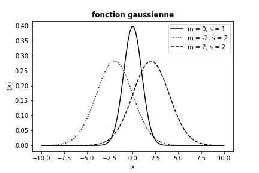

Soit la relation de récurrence suivante: $$x^{k+2} = 2x^{k+1} - 3x^{k} \ pour \ k \ge 0 \ et \ x^0 =1, \ x^1 =2$$ Calculer et afficher les 10 premiers termes de cette relation sous la forme :
x^2 = 1
x^3 = -4
x^4 = -11
x^5 = -10
x^6 = 13
x^7 = 56
x^8 = 73
x^9 = -22
x^10 = -263
x^11 = -460
Le programme qui calcule et affiche les 10 premiers termes de la relation peut s’écrire comme suit:
a) Le code suivant est supposé calculer la somme \( s = \sum_{k=1}^M {1\over k} \)
s = 0; k = 1; M = 100
while k < M:
s += 1/k
print(s)
Ce programme ne fonctionne pas correctement. Quelles sont les deux erreurs? (si vous essayez d'exécuter le programme, rien ne se passera à l'écran). Écrivez un programme correct.
Le programme correct est:
b)
Réécrivez la version corrigée du programme en a) en utilisant une boucle for sur k valeurs au lieu d'une boucle while.
La version corrigée du programme dans a) à l'aide d'une boucle for est la suivante:
Nous voulons générer \( n + 1 \) coordonnées \( x \) équidistantes dans \( [a, b] \). Stocker, pour a = -2; b = 3 et n= 20 les coordonnées \( x \) dans une liste xList.
a)
Définir toutes les variables puis utiliser une boucle for et ajouter chaque coordonnée à la liste xList (initialement vide).
Avec \( n \) intervalles, correspondant à \( n + 1 \) points, dans \( [a, b] \), chaque intervalle a une longueur \( h = (b-a) / n \). Les coordonnées peuvent alors être générées par la formule xi = a + i * h; \( i = 0,…, n \).
La liste xList sera remplis par les valeurs de xi comme suivant:
n =20
a, b = -2, 3
h = (b - a) / n
xList = []
for i in range(n+1):
xi = a + i * h
xList.append(xi)
b) Utiliser une liste de compréhension comme une implémentation alternative.
Nous pouvons également remplir xList par une liste de compréhension:
xList = [a + i * h for i in range(n+1)]
c)
Vectoriser la liste résultante xList en un tableau numpy xVect. N'oubliez pas d'importer d'abord la fonction qui transforme les listes en tableaux à partir de numpy.
La fonction numpy.array() transforme les listes en tableaux numpy:
from numpy import array
xVect = array(xList)
a)
Créer la fonction: gauss(x, m = 0, s = 1), qui modélise la gaussienne:
$$
\begin{equation}
f(x) =
{1\over\sqrt{2\pi }\, s}
\exp{\left[-\frac{1}{2}\left({x-m\over s}\right)^2\right]}
\label{_auto1}
\end{equation}
$$
La fonction gauss(x, m = 0, s = 1) est la suivante:
from pylab import *
def gauss(x, m = 0, s = 1):
A = 1/sqrt(2*pi*s)
B = -0.5 *((x-m)/s)**2
return A*exp(B)
b)
Créer un tableau x à l'aide de la fonction linspace, du module numpy, pour 100 valeurs x uniformément espacées dans [-10, 10].
Pour avoir 100 valeurs x uniformément espacés dans [-10, 10], on écrit:
x = linspace(-10, 10, 100)
c)
Écrire les instructions pour tracer le graphique ci-dessous à l’aide de la bibliothèque matplotlib.

Le programme qui donne le graphique de la fonction gaussienne est:
plt.plot(x, gauss(x, m = 0, s = 1), 'k-', label = 'm = 0, s = 1')
plt.plot(x, gauss(x, m = -2, s = 2), 'k:', label = 'm = -2, s = 2')
plt.plot(x, gauss(x, m = 2, s = 2), 'k--', label = 'm = 2, s = 2')
plt.title("fonction gaussienne", fontweight = 'bold')
plt.xlabel("x")
plt.ylabel("f(x)")
plt.legend()
plt.show()
En mathématiques et en physique théorique, les polynômes de Legendre constituent l'exemple le plus simple d'une suite de polynômes orthogonaux. Ce sont des solutions polynomiales \( P_n(x) \) de l'équation différentielle de Legendre : $$ \begin{equation*} \frac{d}{d x}\left[(1-x^{2}){\frac {d }{d x}}P_{n}(x) \right]+ n(n+1) P_{n}(x)=0 \end{equation*} $$ Les polynômes de Legendre sont définis uniquement pour \( x \in [-1 ; 1] \) puisque les points \( x = \pm 1 \) sont des points singuliers réguliers de cette équation différentielle.
Les 6 premiers polynômes de Legendre sont : $$ \begin{eqnarray*} P_{0}(x)&=&1 \\\ P_{1}(x)&=&x \\\ P_{2}(x)&=&\frac{1}{2}(3x^{2}-1)\\\ P_{3}(x)&=&\frac{1}{2}(5x^{3}-3x)\\\ P_{4}(x)&=&\frac{1}{8}(35x^{4}-30x^{2}+3)\\\ P_{5}(x)&=&\frac{1}{8}(63x^{5}-70x^{3}+15x) \end{eqnarray*} $$
a)
Définir les fonctions P0(x), P1(x), P2(x), P3(x), P4(x) et P5(x) qui retournent les valeurs des 6 premiers polynômes de Legendre.
Les fonctions qui calculent les 6 premiers polynômes de Legendre sont les suivantes:
import numpy as np
import matplotlib.pyplot as plt
def P0(x):
return np.ones(len(x))
def P1(x):
return x
def P2(x):
return 1/2*(3*x**2 - 1)
def P3(x):
return 1/2*(5*x**3 - 3*x)
def P4(x):
return 1/8*(35*x**4 - 30*x**2 + 3)
def P5(x):
return 1/8*(63*x**5 - 70*x**3 + 15*x)
b)
Créer un tableau x à l'aide de la fonction linspace, du module numpy, pour 100 valeurs x uniformément espacées dans [-1, 1].
La variable x est définie comme suivant:
x=np.linspace(-1,1,100)
c)
Tracer ces polynômes sur le même graphique en utilisant la bibliothèque matplotlib.
Les instructions pour le traçage des courbes sont les suivantes:
plt.figure()
plt.plot(x,P0(x),label='P0')
plt.plot(x,P1(x),label='P1')
plt.plot(x,P2(x),label='P2')
plt.plot(x,P3(x),label='P3')
plt.plot(x,P4(x),label='P4')
plt.plot(x,P5(x),label='P5')
plt.title('Les six premiers polynômes de Legendre', weight = "bold")
plt.xlabel("x")
plt.ylabel("P(x)")
plt.legend()
plt.grid()
plt.show()
PolyLegendre.py: